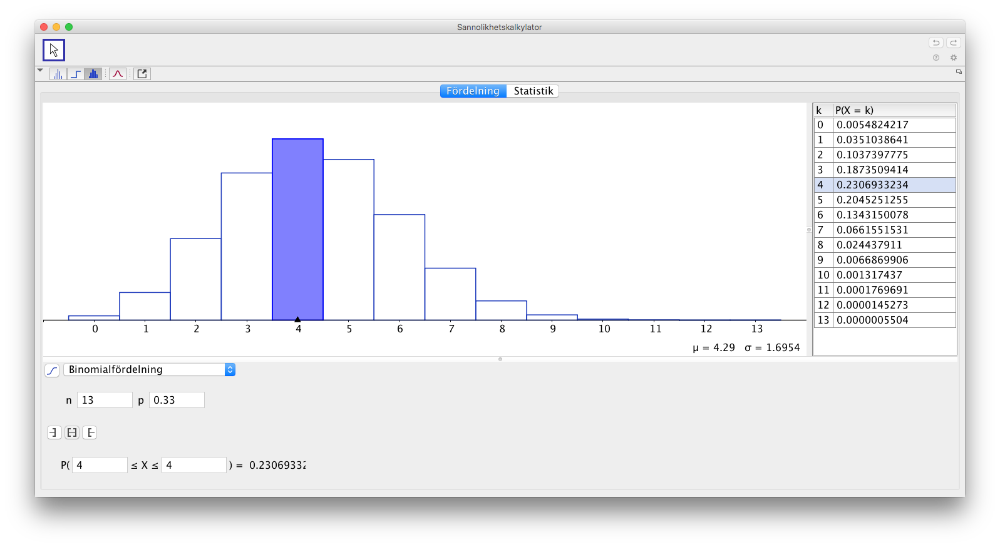
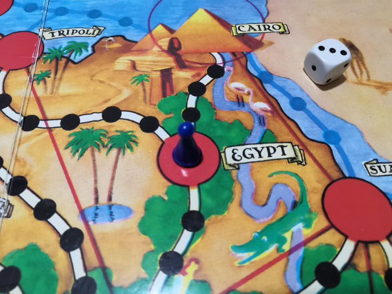
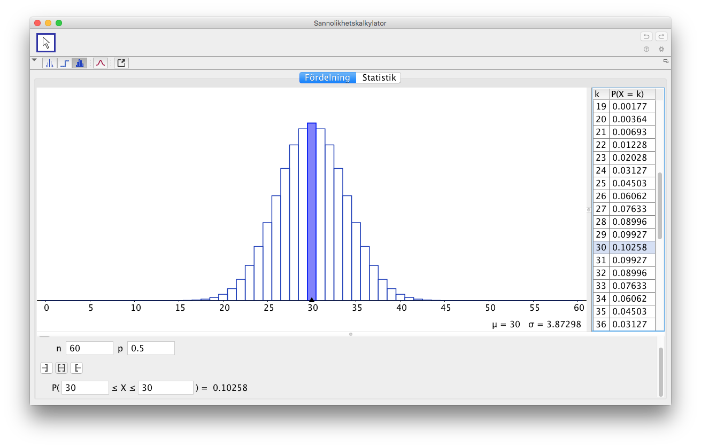

19. Repetition
Sedan är det bara att repetera.
Uppgifter
- Vi kastar en tärning formad som en tetraeder som slumpmässigt ger tal mellan 1 till 4 och en tärning formad som en oktaeder som slumpmässigt ger tal mellan 1 till 8. Bestäm sannolikheten att
- den totala summan av ögontalen är större än 6.
Rita upp en tabell. Kom fram till \( \dfrac{1}{8} = 0,125 \).
- att tetraedern ger ett större ögontal.
Rita upp en tabell. Jämför areorna som bildas. Kom fram till \( \dfrac{3}{16} \).
- den totala summan av ögontalen är större än 6.
- Vi väljer slumpmässigt två tal. Det första från intervallet \( [-1,1] \) och det andra från \( [-2,1] \). Bestäm sannolikheten att summan av talen är positiv.
Rita en bild, tabell. Jämför den arean som vi söker efter med totala arean.
Kom fram till \( \dfrac{1}{3} \).
- I en urna finns 15 vita och 12 svarta kulor. Vi lyfter slumpmässigt 5 st kulor. Bestäm sannolikheten att vi får 3 st vita och 2 st svarta kulor.
Totalt har vi 27 kulor. Vi får sannolikheten \( \dfrac{\binom{15}{3}\binom{12}{2}}{\binom{27}{5}} = 0,37198\ldots \approx 0,372 \).
- Anna övernattar i skogen. Från hennes lägerplats finns en landsväg som är vinkelrät på avståndet 15 km. Hon startar på morgonen och vandrar rakt framåt. Under en dag vandrar hon 20 km. Bestäm sannolikheten att hon kommer fram till landsvägen samma dag.
Situationen är följande

Vi söker en vinkel i triangeln. Den får vi med cosinus, \( 41,4\ldots^{\circ} \)
Vi får \( P(\text{Kommer fram}) = \dfrac{2\cdot 41,4\ldots^{\circ}}{360^{\circ}} = 0,2300\ldots = 0,23 \).
- På lunchrestaurangen på Bertils arbetsplats har varje dag samma menu som består av 7 st olika maträtter. Bertil äter varje dag lunch på restaurangen och han väljer slumpmässigt en maträtt. Bestäm sannolikheten att Bertil äter under en arbetsvecka 5 st olika maträtter.
Vi söker \( \dfrac{\text{gynsamma}}{\text{totala}} \). Gynsamma fall är \( 7 \cdot 6 \cdot 5 \cdot 4 \cdot 3 \) och totala fall är \( 7^5 \).
Sannolikheten är 0,15.
- En tärning kastas 5 gånger. Lönar det sig att slå vad om att ett ögontal inte kommer två gånger efter varann?
Vi söker \( \dfrac{\text{gynsamma}}{\text{totala}} \). Gynsamma fall är \( 6 \cdot 5 \cdot 5 \cdot 5 \cdot 5 \) och totala fall är \( 6^5 \).
Sannolikheten är 0,48.
Eftersom sannolikheten är mindre än 0,50 så lönar det sig inte.
- I en låda finns 5 gula och 7 röda bollar. På hur många olika sätt kan vi dra fyra bollar ur lådan så att
- två är gula och två är röda
Antal grupper med gula bollar är \( \displaystyle\binom{5}{2} \) och antal grupper med röda bollar är \( \displaystyle\binom{7}{2} \).
Totala antalet är \( \displaystyle\binom{5}{2} \cdot \displaystyle\binom{7}{2} = 210 \) olika sätt.
- det finns åtminstone en boll av vardera färgen?
4 bollar av 12 kan vi välja på \( \displaystyle\binom{12}{4} = 495\) olika sätt.
Mänden där 4 gula bollar väljs av 5 är \( \displaystyle\binom{5}{4} = 5\) st.
Mänden där 4 gula bollar väljs av 7 är \( \displaystyle\binom{7}{4} = 35\) st.
Alltså är antalet där iaf en färg är representerad \( 495 - 5 - 35 = 455 \) olika sätt.
- två är gula och två är röda
- Av ringmarkerade duvhökar träffas senare 15 %. Hur många duvhökar skall man ringmarkera så att sannolikheten är minst 99 % att man i alla fall träffar en duvhök på nytt. Vi antar att händelsen att man träffar på ringmarkerade duvhökar är oberoende av varandra.
Sannolikheten att vi inte träffar på en duvhök är 0,85. Då är sannolikheten att man inte träffar på \( n \) st \( 0,85^n \).
Vi får följande, \( P(\text{minst 1}) = 1 - P(\text{ingen}) = 1 - 0,85^n \).
Vi vill att \( 1 - 0,85^n > 0,99 \). Då du löser olikheten (du kan tänka att du löser en ekvation) får vi \( n > 29 \).
- En tärning kastas tre gånger. Vilken är sannolikheten att man får ögontalet 6 åtminstone en gång?
Totala antalet utfall är \( 6 \cdot 6 \cdot 6 = 216 \).
Vi jobbar via komplementet och söker kast som inte innehåller en 6:a. Dess är \( 5 \cdot 5 \cdot 5 =125\) st.
Vi får \( P(\text{åtminstone en 6:a}) = 1 - P(\text{ingen 6:a}) = 1 -\dfrac{125}{216} = 0,4212\ldots \approx 0,421 \).
- En tärning kastas tre gånger. Vilken är sannolikheten att det erhållna ögontalet allid är större än ögontalet i föregående kast?
För det andra kastet gäller det att ögontalet är mindre mera än förra kastet.
Vi skapar följande tabell.

Totala antal utfall är \( 6^3 = 216 \) gynsamma fall är 20 st.
Den sökta sannolikheten är \( P(\text{större ögontal med tre kast}) = \dfrac{20}{216} = \dfrac{5}{54} = 0,09259\ldots \approx 0,093 \).
- Lönar det sig att slå vad om att då två slantar singlas tre gånger, så får man i alla fall en gång två kronor.
Vi får \( P(\text{i alla fall två kronor}) = 1 - P(\text{inget par med korna}) = 1 - (\dfrac{3}{4})^3 \approx 0,58 \).
Jo, det lönar sig, eftersom sannolikheten är större än 0,50.
- Biljettkontrollanter undersöker slumpmässigt cirka var 300:e passageres biljett. Bestäm sannolikheten att en person som åker till jobb och hem blir fast under ett år för att åka utan biljett. Ett år har 220 arbetsdagar.
Vi får \( P(\text{Blir fast}) = 1 - P(\text{blir inte fast}) = 1 - (\dfrac{299}{300})^{440} = 0,77 \).
- Daniel kastar slumpmässigt pil mot tavlan som är nedan. Bestäm väntevärdet av kastet.

Bestäm arean för varje område och jämför det med hela arean, 81 rutor, för att få sannolikheterna.
Väntevärdet, \( E(x) = 2,04 \).
- Sju stycken 20-åriga manliga vänner bestämmer sig att träffas 60 år senare. Med vilken sannolikhet kommer minst 2 personer att komma till träffen? Av 20-åriga män uppnår ca 30 % en ålder om 80 år.
Vi har upprepat försök. Sannolikheten att en person inte uppnår 80 år är 0,70.
\( P(\text{Minst 2 personer}) = 1 - (P(\text{Ingen}) + P(\text{En person})) = \\ 1 - (0,70^{7} + \displaystyle\binom{7}{1} 0,30 \cdot 0,70^6) \approx 0,67\)
- På Annas skolväg finns det tre övergångsställen med trafikljus som fungerar oberoende av varandra. Trafikljusen visar grönt 30 %, 45 % och 60 % av tiden. Bestäm sannolikheten att på grund av rött ljus så månste Anna stanna
- en gång
Bilda tre fall där en av ljusen visar rött.
Vi får \( 0,70 \cdot 0,45 \cdot 0,60 + 0,30 \cdot 0,55 \cdot 0,60 + 0,30 \cdot 0,45 \cdot 0,40 = 0,34 \).
- i alla fall en gång.
Vi går via komplementet, \( P(\text{i alla fall en gång}) = 1-P(\text{ingen gång}) = 1- 0,30 \cdot 0,45 \cdot 0,60 = 0,92 \).
- en gång
- I Stryktipset (Vakioveikkaus) spelar man på 13 matcher och försöker gissa om matchen slutar i seger för hemmalaget 1, jämt X eller seger för bortalaget 2. Vinst betalas ut om man får mera än 10 st rätt.
- Bestäm sannolikheten att vi har 10 st rätt.
Vi har upprepat försök. Vi får \( \displaystyle\binom{13}{10}0,33^{10}\cdot 0,66^{3} = 0,0013 \approx 0,001 \).
- Bestäm sannolikheten att vi vinner pengar.
Vi skall ha 13, 12, 11 eller 10 rätt.
Vi får \( \displaystyle\binom{13}{13}0,33^{13}\cdot 0,66^{0} + \displaystyle\binom{13}{12}0,33^{12}\cdot 0,66^{1} + \\ \displaystyle\binom{13}{11}0,33^{11}\cdot 0,66^{2} + \displaystyle\binom{13}{10}0,33^{10}\cdot 0,66^{3} = 0,00150 \approx 0,002 \).
- Rita upp fördelningen på GeoGebra. Hur många rätt har den största sannolikheten?
Vi får

Vi ser att största sannolikheten har 4 gånger rätt.
- Bestäm sannolikheten att vi har 10 st rätt.
- Följande uppgifter är från SE våren 2021.
Lisa spelar spelet Afrikas stjärna. Hon har hittat Afrikas stjärna och återvänder till Kairo för att vinna spelet. Hon är på fyra stegs avstånd från Kairo. Man får stanna i Kairo även om tärningens ögontal skulle berättiga till att resa längre.

Om hon kastar minst ögontalet fyra så kommer hon fram till Kairo och vinner spelet. Om hon kastar ögontalet tre så kan hon vara säker på att hon på följande kast kommer fram till Kairo och vinner spelet. Lisa behöver högst fyra kast för att komma fram till Kairo. Vi antar att ingen annan vinner spelet före det.
- Med vilken sannolikhet vinner Lisa på första kastet?
Lisa vinner på det första kastet om hon som resultat får 4-6, dvs. sannolikheten är \( \dfrac{3}{6} = \dfrac{1}{2} \).
- Med vilken sannolikhet behöver Lisa minst tre kast för att komma fram till Kairo?
Lisa behöver era än två kast endast om resultatet av de två första kasten är 1,1 eller 1,2 eller 2,1.
Två tärningar kan kastas på \( 6 \cdot 6 = 36 \) olika sätt.
Sannolikheten är alltså \( \dfrac{3}{36} = \dfrac{1}{12} \approx 0,083\ldots \).
- Beräkna väntevärdet för antalet kast som Lisa behöver för att komma fram till Kairo.
Eftersom sannolikheten för att hon ska behöva minst tre kast är \( \dfrac{3}{36} \) och sannolikheten för att ett kast räcker är \( \dfrac{1}{2} \), är sannolikheten för att exakt två kast behövs \( 1 - \dfrac{3}{36} - \dfrac{1}{2} = \dfrac{15}{36} \).
Fyra kast behövs endast då vart och ett av de tre första kasten ger en etta, dvs. sannolikheten är \( \dfrac{1}{6^3} = \dfrac{1}{216} \).
Sannolikheten för att tre kast behövs är där med \( \dfrac{3}{36} - \dfrac{1}{216} = \dfrac{17}{216} \).
Väntevärdet är alltså \( 1\cdot\dfrac{1}{2} + 2 \cdot \dfrac{15}{36} + 3\cdot \dfrac{17}{216} + 4\cdot \dfrac{1}{216} =\dfrac{343}{216} \approx 1,59 \).
- Med vilken sannolikhet vinner Lisa på första kastet?
- Följande uppgifter är från SE hösten 2021.
I ett spel kastar två spelare A och B turvis tärning ända tills den ena spelaren vinner och spelet avslutas.
Spelaren A vinner spelet om han på sin kasttur kastar resultatet 1 eller 2.
Spelaren B vinner spelet om hon på sin kasttur kastar resultatet 1, 2 eller 3.
Spelaren A börjar.
- Med vilken sannolikhet slutar spelet med att A vinner på sitt första kast?
\( P(\text{A vinner på 1.a kastet}) = \dfrac{2}{6} = \dfrac{1}{3} \).
- Med vilken sannolikhet slutar spelet med att B vinner på sitt första kast?
För att B skall vinna så skall A inte vinna och B sedan vinna.
A vinner inte med sannolikheten \( 1- \dfrac{1}{3} = \dfrac{2}{3} \).
Vi får \( P(\text{A vinner inte och B vinner}) = \dfrac{2}{3} \cdot \dfrac{3}{6} = \dfrac{1}{3} \).
- Vilken är sannolikheten för vardera spelaren att vinna spelet?
För att vinna på första omgången har både A och B samma sannolikhet, \( \dfrac{1}{3} \).
Vinner varken A eller B på första omgången spelar de en till omgång. Då är förutsättningarna samma som på första omgågen. De har samma sannolikhet att vinna.
Spelet tar slut då någon dera spelare vinner, alltså är den sökta sannolikheten \( \dfrac{1}{2} \).
- Med vilken sannolikhet slutar spelet med att A vinner på sitt första kast?
- Följande uppgifter är från SE våren 2022.
- En godispåse innehåller 22 salmiakkarameller och 19 fruktkarameller. Eri tar tre karameller ur påsen. Med vilken sannolikhet är alla tre fruktkarameller?
Karamellernas totala antal i början: \( 19+22=41 \).
Sannolikheten för att den första karamellen som tas ur påsen är en fruktkaramell är \( \dfrac{19}{41} \).
Sannolikheten för att den andra karamellen som tas ur påsen är en fruktkaramell är \( \dfrac{18}{40} \) och för den tredje är sannolikheten \( \dfrac{17}{39} \).
Sannolikheten är alltså \( \dfrac{19}{41}\cdot \dfrac{18}{40}\cdot \dfrac{17}{39} \approx 0,0909 = 9 \)%.
- Alla karameller som Eri tagit ur påsen är fruktkarameller, varvid påsen innehåller 22 salmiakkarameller och 16 fruktkarameller. Kura tar nu fem karameller ur påsen. Med vilken sannolikhet finns det bland dessa fem karameller minst en salmiakkaramell och minst en fruktkaramell?
Vi beräknar sannolikheten för komplementhändelsen, dvs. sannolikheten för att alla är fruktkarameller eller alla är salmiakkarameller.
Alla är salmiakkarameller: \( \dfrac{22\cdot 21\cdot 20\cdot 19\cdot 18}{38\cdot 37\cdot 36\cdot 35\cdot 34}\approx 0,05246 \).
Alla är fruktkarameller: \( \dfrac{16\cdot 15\cdot 14\cdot 13\cdot 12}{38\cdot 37\cdot 36\cdot 35\cdot 34}\approx 0,00870 \).
Den efterfrågade sannolikheten är alltså \( 1-0,05246-0,00870\approx 0,93883\approx 0,94=94 \) %.
- En godispåse innehåller 22 salmiakkarameller och 19 fruktkarameller. Eri tar tre karameller ur påsen. Med vilken sannolikhet är alla tre fruktkarameller?
- Följande uppgifter är från SE hösten 2022.
Av 99 små röda kuber, som sinsemellan är lika stora, sammanställs tre stora kuber som består av 8, 27 och 64 delar. Sidorna i dessa tre stora kuber målas med blå färg. Efter målandet tas de stora kuberna isär så att de åter bildar 99 små kuber.
- En liten kub väljs slumpmässigt ut. Med vilken sannolikhet är den valda kubens alla sidor röda?
Vi beräknar först antalet inre kuber. I den kub som består av åtta små kuber finns det ingen inre kub. Den kub som består av 27 små kuber har en inre kub, och den kub som består av 64 små kuber har 8 (=23) inre kuber. Antalet inre kuber är alltså sammanlagt 9.
De små kuberna är totalt 99, till antalet, vilket betyder att den efterfrågade sannolikheten är \( \dfrac{9}{99} = \dfrac{1}{11} \).
- Tre små kuber väljs slumpmässigt ut. Med vilken sannolikhet är alla sidor röda på åtminstone en av de valda kuberna?
Komplementhändelse: Ingen av de små kuberna är röd på alla sidor.
Till att börja med finns det 90 kuber som inte är röda på alla sidor.
Sannolikheten för att den andra kubens alla sidor inte är röda är \( \dfrac{89}{98} \).
Sannolikheten för att den tredje kubens alla sidor inte är röda är \( \dfrac{88}{97} \).
Den efterfrågade sannolikheten är alltså \( 1 - \dfrac{90}{99} \cdot \dfrac{89}{98} \cdot \dfrac{88}{97} = \dfrac{1193}{4753} \approx 0,25 \).
- En liten kub väljs slumpmässigt ut. Med vilken sannolikhet är den valda kubens alla sidor röda?
- En slant singlas 60 gånger. Bestäm sannolikheten att antalet klavor är
- 30 st
Vi har upprepat försök. Vi får \( \displaystyle\binom{60}{30}0,50^{30}\cdot 0,50^{30} = 0,10258 \approx 0,103 \).
- Mellan 29 och 31 stycken.
Vi får \( \displaystyle\binom{60}{29}0,50^{29}\cdot 0,50^{31} + \displaystyle\binom{60}{30}0,50^{30}\cdot 0,50^{30} + \displaystyle\binom{60}{31}0,50^{31}\cdot 0,50^{29}= 0,30112 \approx 0,301 \).
- Rita upp fördelningen på GeoGebra. Hur många klavor har största sannolikheten?
Vi får

Vi ser att största sannolikheten har 30 gånger klave.
- 30 st
- Av finländarna är 51 % kvinnor. Bestäm sannolikheten att då vi slumpmässigt väljer 10 personer så får vi lika många män som kvinnor.
Vi har binomialsannolikhet. Vi får \( \displaystyle\binom{10}{5}0,51^5\cdot 0,49^5 = 0,25 \).
- Av alla barn som föds är 51,2 % pojkar. Bestäm sannolikheten att i en familj med 6 st barn så har vi minst 2 st pojkar och 2 st flickor.
Vi vill ha sannolikheten för \( P(\text{2 pojkar}) + P(\text{3 pojkar}) + P(\text{4 pojkar}) \). Sannolikheten för flickorna är det motsatta.
Vi får \( 0,78 \).